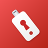

Сертификат сервераСверьте все символы с отпечатком от ИТ-службы. Не устанавливайте, если отпечатка нет или он отличается: такой сертификат позволяет подделывать любые сайты.
Кнопка загрузит профиль. Затем: Настройки → «Профиль загружен» → «Установить» и Основные → Об этом устройстве → Доверие сертификатам → включить.